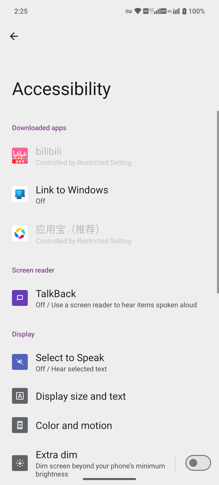
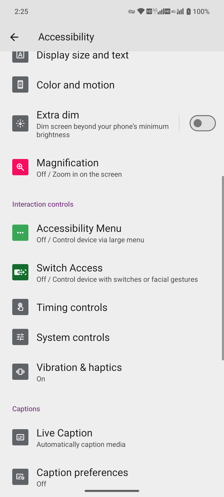
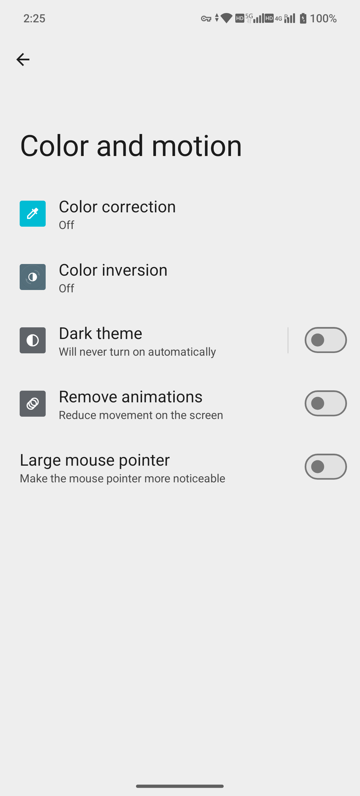
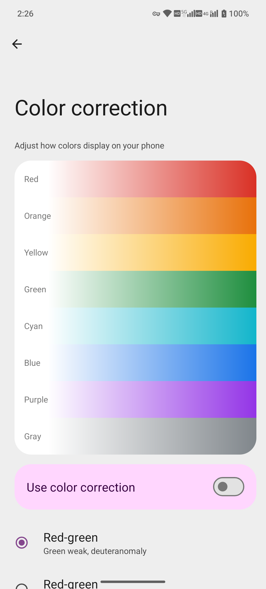
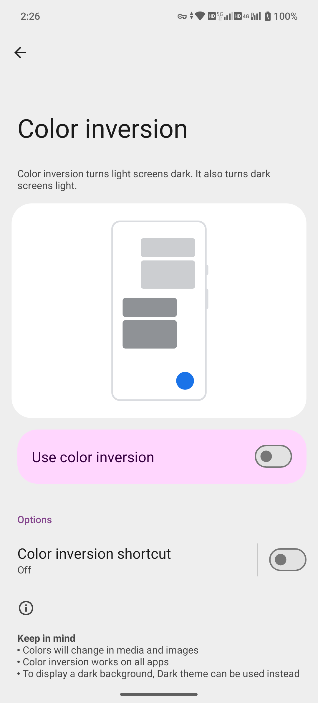
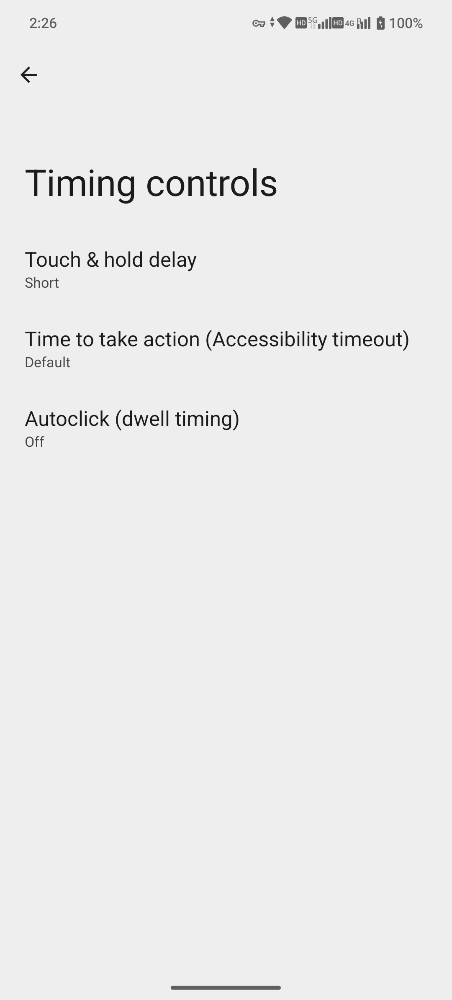
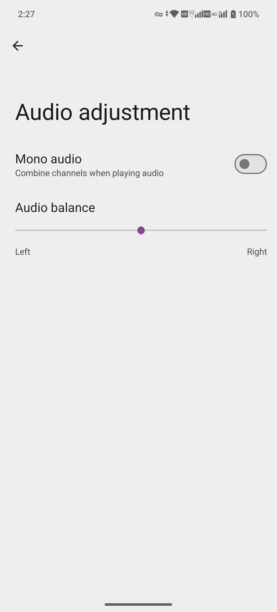
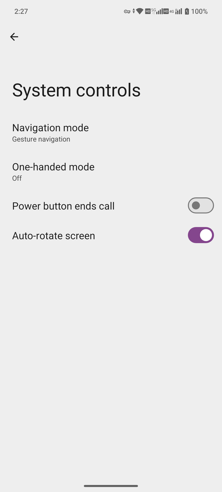
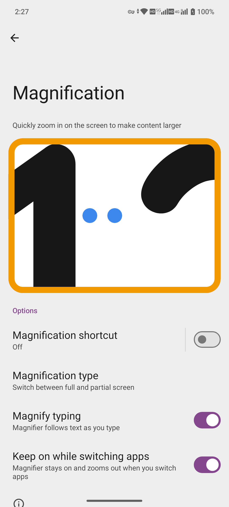

系統設定 / accessibility
無障礙、字型、顏色與輔助操作
按視覺、聽覺或操作需要選擇功能；避免開啟後不熟悉退出手勢。
適用基線：MA1 · Android 15 · MAG1WW53。採集：2026-10-14。本頁為編輯草稿；除明確說明的操作外，步驟未執行驗證。
Settings → Accessibility
前置條件
- 記錄原設定
- 螢幕閱讀器、放大與操作選單開啟前先閱讀退出方式
- 用非私密內容驗證
逐步操作
- 開啟 Accessibility，瀏覽實際分類及子功能。
- 先調整容易恢復的字型/顯示大小，觀察示例文字；具體滑塊和復位按鈕需子頁核驗。
- 顏色與動畫選項需結合自己需要，修改前記下原值。
- 螢幕閱讀器會改變點按與滑動方式，未核驗退出前不作為預設示範開啟。
- 聽覺與互動輔助可能影響音訊通道、觸控和快捷鍵，逐項閱讀頁面並單獨測試。
- 每次只修改一項，效果確認後記錄；如不合適先恢復再試另一項。
按鈕與選項
| 按鈕 / 選項 | 用途與邊界 |
|---|---|
| 字型/顯示大小 | 改變文字或整個介面比例 |
| 顏色/動畫 | 改善可辨識性或減少動畫 |
| 螢幕閱讀器 | 操作手勢可能變化 |
| 無障礙快捷方式 | 防止誤觸，按真實頁面配置 |
本批實際看到的英文標籤
- Downloaded apps
- bilibili
- Link to Windows
- 應用寶（推薦）
- Screen reader
- TalkBack
- Display
- Select to Speak
- Display size and text
- Color and motion
- Extra dim
- Magnification
- Interaction controls
- Accessibility Menu
- Switch Access
- Timing controls
- System controls
- Vibration & haptics
- Captions
- Live Caption
- Caption preferences
- Audio
- Audio description
- Flash notifications
- Hearing devices
- Audio adjustment
- General
- Accessibility shortcuts
- Text-to-speech output
標籤出現只證明入口/選項可見；此列表不代表所有專案已操作。
正常結果與本次證據
無障礙選單將按實機清點；功能效果不因入口存在而標為透過。
取消、關閉與恢復
恢復原選項；輔助服務須用該服務說明的關閉方式，不假設音量鍵組合都通用。
報錯與排查
- 頁面變大找不到按鈕：使用已確認的輔助退出或返回
- 點按方式改變：檢查螢幕閱讀器
- 第三方服務缺項：核對安裝與許可權
限制與版本
只有選單採集，不聲稱專業輔助器材相容結果。
同事複核：未進行。釋出狀態：未釋出。
截圖與影片
本批影片已重錄，顯示觸點與滑動軌跡，保留原生座標欄。標記對應 ADB 注入的觸控操作，並非實體手指拍攝。錄製後已恢復臨時觸摸顯示設定；影片無音訊。
本批補錄以下英文真機畫面。除另有註明，素材證明選單及選項可見；未變更設定，也不代表外接裝置或服務已通過測試。


MAG1WW53 · 2026-10-14 · 原始截圖


MAG1WW53 · 2026-10-14 · 原始截圖


MAG1WW53 · 2026-10-14 · 原始截圖


MAG1WW53 · 2026-10-14 · 原始截圖


MAG1WW53 · 2026-10-14 · 原始截圖


MAG1WW53 · 2026-10-14 · 原始截圖


MAG1WW53 · 2026-10-14 · 原始截圖


MAG1WW53 · 2026-10-14 · 原始截圖


MAG1WW53 · 2026-10-14 · 原始截圖
MAG1WW53 · 2026-10-14 · 選單瀏覽錄屏
MAG1WW53 · 2026-10-14 · 選單瀏覽錄屏
功能補充 · 2026-10-14
已看到 TalkBack、Select to Speak、Extra dim、Magnification、Accessibility Menu、Switch Access、時間及系統控制、助聽裝置、音訊調整與文字轉語音。啟用螢幕閱讀器前先閱讀退出手勢；配對及輔助操作仍未測。
Live Caption 顯示字幕偏好、情感字幕、粗話篩選、音量控制捷徑、Live Caption in calls、Type responses during calls 及 Voice for typed responses。頁面顯示兩種語言，但未擷取名稱；這些選項不代表已確認通話翻譯支援或準確度。